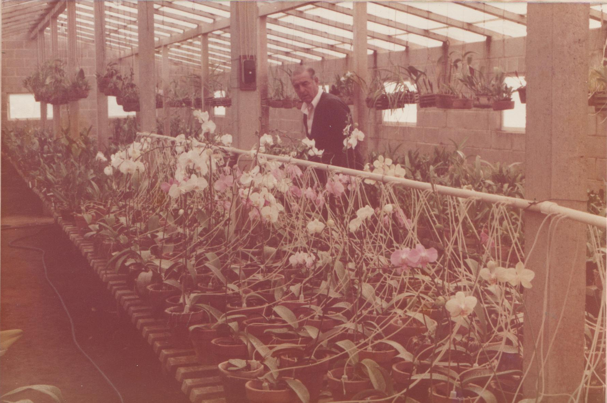

Our Story

It all began at the countryside home of award‑winning orchid grower Antonio Vendramin (1923–1996), in the Caxambu district of Jundiaí, Brazil.
In a greenhouse with over ten thousand orchid species, an innovative irrigation system was installed in the 1980s using transparent micro‑tubes reaching each pot — implemented by Antonio Vendramin Filho.
Fabio S. Vendramin, a Computer Engineer, later refined Aguatudo by combining technology and sustainability. With keen attention, he integrated meteorological data to optimize water usage.
The system includes friendly, easy‑to‑install accessories — made for anyone who loves caring for their plants.